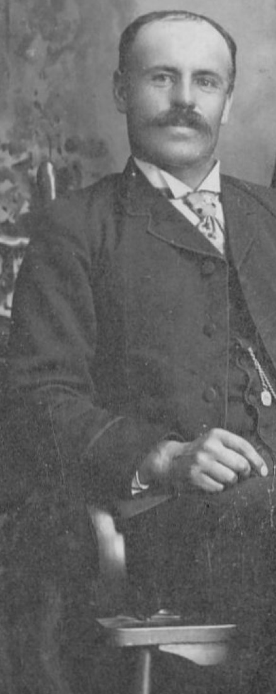
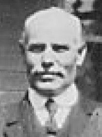

Henry Douglas Atkinson 1864 - 1944
[ Home ] | [ Calendar ] | [ Surnames Index ] | [ Family History ]A station master and the 2nd of 3 children of Thomas Atkinson and Mary Warman, Henry Atkinson, the third cousin twice-removed on the father's side of Nigel Horne, was born in New Brunswick, Canada on Apr 13, 18641,2 and married Mary Branch (with whom he had 6 children: Maud Lavinia, Mary E, Gordon D, Thomas Howard, Doris Alexandra and Hammond) in Gloucester, New Brunswick on Sep 18, 1889. In 1901, he lived at his birthplace2.
He died in 1944.
Parents
- Mary Jane was born on Jan 9, 1833
Children
- Maud Lavinia was born on Oct 2, 1890
- Mary E was born on Nov 26, 1891
- Gordon D was born on Jun 17, 1893
- Thomas Howard was born on Jul 27, 1895
- Doris Alexandra was born in 1903
- Hammond was born in 1905
Citations
- Canada Census 1891 - Findmypast
- Canada Census 1901 - Findmypast (was the head of the household)
Notes
See Vol_30-3_Fall_2008 of Generations from the New Brunswick Genealogical Society.
Media
Henry Douglas Atkinson

Henry Douglas Atkinson - 2

Canada Census 1901 - CAN/CENSUS/1901/00561416
Canada Census 1891 - CAN/CENSUS/1891/00307129
Family Tree

Generated by Ged2Site. Last updated on Jul 20, 2025